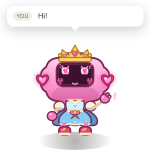
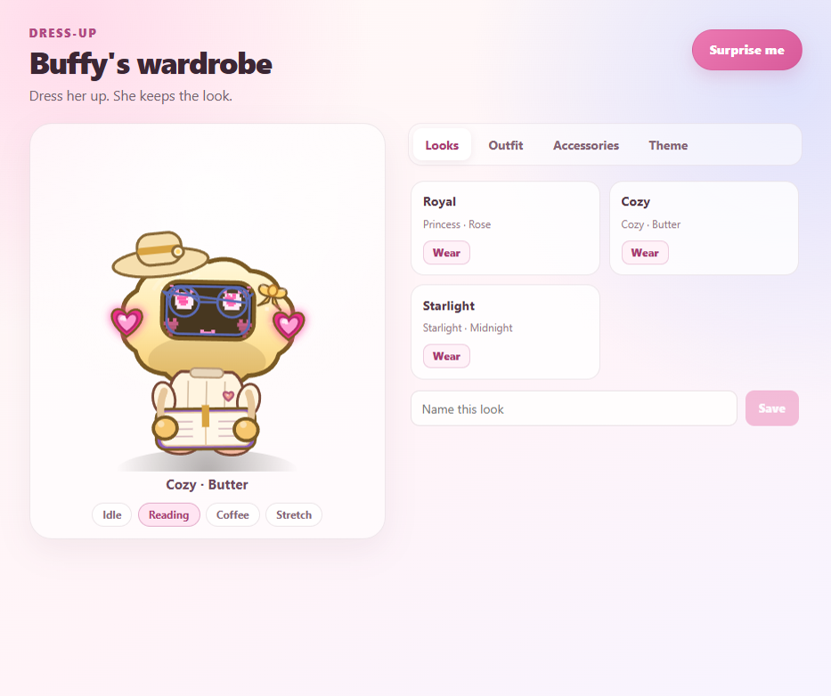
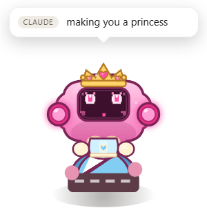
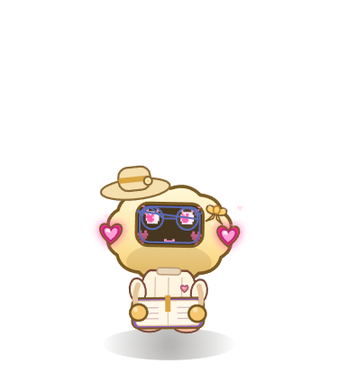
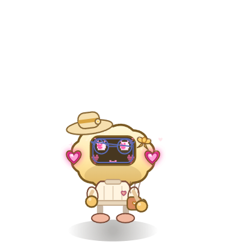
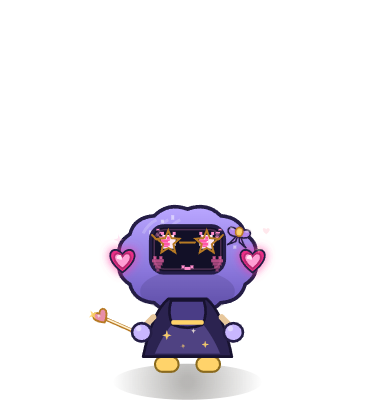

Agent-aware
Claude Code and Freebuff can send thinking, working, needs-you, and done. Concurrent sessions get their own rail, and the repo watcher catches edits when your agent stays quiet.
A desk pet for your coding agent
A tiny princess-cloud who lives on your desktop, reacts to Claude Code, Freebuff, and repo edits, then settles in for a nap when the work is done.

Little companion, big feelings
Buffy isn’t another chat window. She’s a small, always-on-top signal that your agent is thinking, working, stuck, or finished.
Claude Code and Freebuff can send thinking, working, needs-you, and done. Concurrent sessions get their own rail, and the repo watcher catches edits when your agent stays quiet.
A frameless, transparent overlay that floats above your windows. Drag her anywhere, tuck her into a corner, or hide her for ten minutes.
Five outfits, five bows, three hats, glasses, wands, and six pastel themes. Build a look in the live-preview wardrobe and save up to twelve of your own.
Her eyes follow your cursor. Click to wave. When the desk goes quiet she reads, sips cocoa, stretches, and eventually naps.
In her natural habitat
Real moments from the overlay — no mockups, no filters, just a small pink creature doing her best.





Under the tiny crown
Buffy is not a chatbot. Agents send lightweight events to a daemon on 127.0.0.1; the daemon owns the state and the overlay draws it. Everything stays on your machine.
$ buffy event thinking --source claude
$ buffy event working \
--source freebuff --msg "editing src/app.ts"
$ buffy event needs-you \
--msg "waiting on your approval"
$ buffy event done
# she does the restReady for a coworker?
Buffy’s desktop apps include the pet and its local daemon. Open one and she’s there — no npm setup for the pet itself. The CLI and agent hooks still run from the Node checkout.
Download for Windows Windows 10/11 · x64macOS Apple silicon macOS Intel Linux AppImage
Free and open source under the MIT license. Builds are unsigned unless signing credentials are configured, so Windows SmartScreen or macOS Gatekeeper may ask you to confirm. Checksums and update metadata are attached to the release.
Every installer has a matching .sha256 file on the v1.1.0 release page.
Prefer to build it?
git clone https://github.com/slayyyyer/buffy.git
cd buffy
npm install
npm run dist:winmacOS and Linux targets are included too. Build on the target OS with npm run dist:mac or npm run dist:linux.